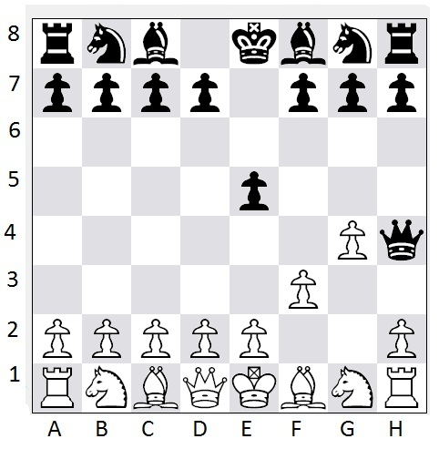

This Linux-based program can be used to establish a chess game room server that clients can connect to and play games with each other. The server keeps track of user accounts (along with user playing strength ratings and hashed passwords). Client.py and server.py are the client program and server program, respectively.
How the code works
For the client/server program, server.py can be used to set up a socket, and client.py can be used to connect to the socket. Most of the logic is built into server.py. As soon as the socket is set up, the client askes the client (user) what he wants to do--enter "2" to login to this account or enter "1" to set up a new username/password. In either case, the client asks the user to enter a username/password, performs basic syntax checking on it, and sends either "LOGIN [username] [password]" or "CREATE_ACCOUNT [username] [password]" request to the server. If the client is creating an account, the server checks whether such an account already exists (in usernames.txt). If the client sends a login request, the server computes the password's hash and compares it against the one stored in usernames.txt.
The server communicates using commands from the "select" library which causes it to continuously iterate through all sockets. The client communicates at first via individual send/recv socket commands, but once initial login has been established starts 3 threads: a "send", a "receive", and a "command" thread. Each of these threads runs an infinite loop. The "receive" thread simply receives all requests from the server and prints them to the standard output. The "command" thread reads anything the user enters and puts it in the "outbox" queue. The "send" thread checks the outbox every 0.5 seconds and sends any message that is in the outbox, in JSON format, along with the username and password. The server always checks whether the message is in JSON format, decodes it if necessary. If the username and password cannot be verified, it will not execute the command (unless it is a "LOGIN", "LOGOUT", or "CREATE_ACCOUNT" request). The purpose of this is to make it more difficult for hackers to spoof client messages. If the outbox is empty, the "send" thread will send an "UPDATE" request. This is necessary, because in the current setup, the server will not send the client anything until the client sends something first. And in situations like an incoming text message or chess move being made (by some other user), updates are needed. In order to keep track of what connections are associated with which client, the server maintains a dictionary data structure and uses a socket as for each key and a sub-dictionary (username, password, rating, and game index) for each value. To keep track of all the chess games, the server maintains a list. Each list item consists of a dictionary of the following items--1) game status (waiting for invite accept, active, or ended), 2) kibitzers (list of kibitzer sockets), 3) white (white's socket), 4) black (black's socket), 5) position (all information about the current chess position), and 6) whether or not a draw was offered (and by whom).
Program usage
To start the server: python server.py [host] [port]
To start the client: python client.py [host] [port]
Note: Here, "host" refers to the IP address of the server. You can test this program on a LAN (with physical and/or virtual machines), or you can even have the server and client(s) all running from the same machine. In the latter case, you can also set "host" to "localhost" or "127.0.0.1".
The following commands (case-sensitive, no colon) can be entered (from the client):
Note that in the command line interface, the board is displayed as follows: Capital letters are white pieces, lower-case letters are black pieces, and dots are empty squares. In order to verify that the program works correctly, the following move sequence can be tested:
White enters: MOVE f2f3
Black enters: MOVE e7e5
White enters: MOVE g2g4
Black enters: MOVE d8h4
This should lead to the position, known as "Fool's Mate", in the diagram below. Note, also, that the rows ("ranks") and columns ("files") are labeled 1-8 and a-h.

Link to Python chess library: Python Chess
Link to sockets code: Sockets Code
Sometimes, the command LIST_USERS throws an error if a new user was created in that session. This generally occurs only the first time you run the program. If you restart both the client and server, subsequent attempts tend to not throw the error.